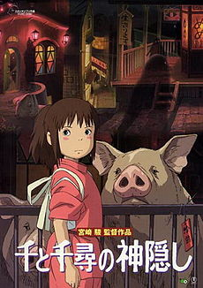

Самое кассовое аниме студии Ghibli
Унесённые призраками

Сюжет фильма повествует о 10-летней девочке по имени Тихиро Огино, которая переезжает в новый дом. Но выходит так, что она попадает в другой мир, населённый призраками и монстрами. После того как её родителей превращает в свиней ведьма Юбаба, Тихиро идёт на работу в баню Юбабы, чтобы найти способ освободить себя и своих родителей, а также вернуться в человеческий мир.
Фильм Унесённые призраками был самым кассовым Аниме до 2020 года.
Фильм унесённые призраками собрал 395 миллинонов долларов.